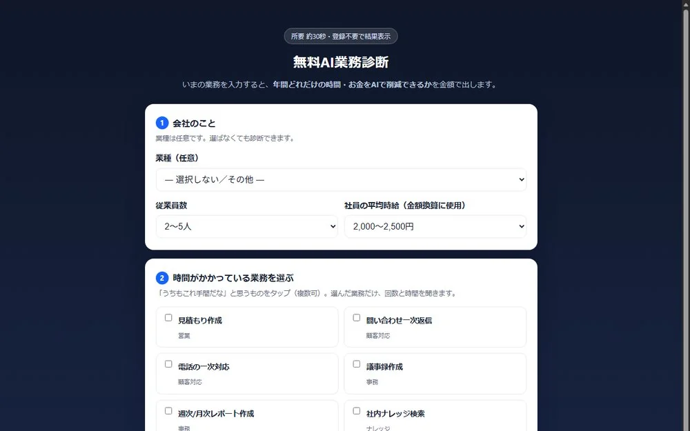
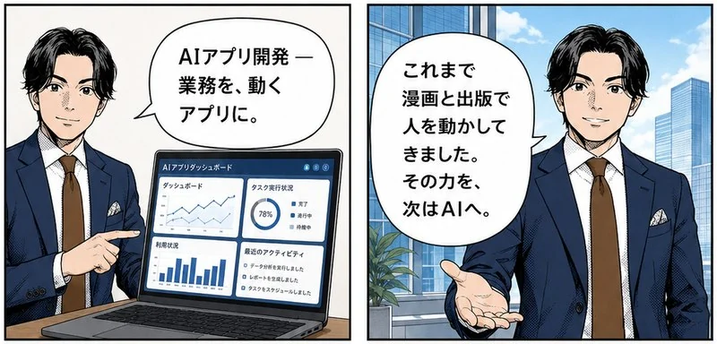
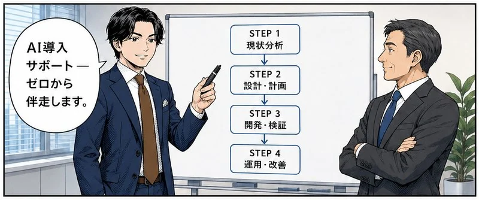
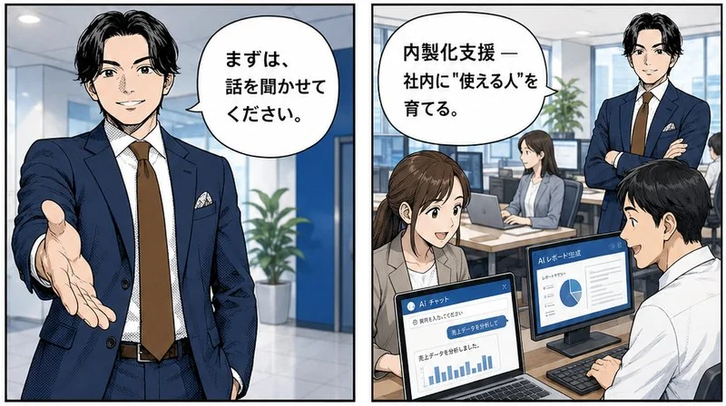

私たちの強みは、コンテンツで人を動かしてきた経験そのもの。その力を、AIの開発・導入という次のステージへ接続します。
生成AIの効果は、もう「未知数」ではありません。国内の導入現場で繰り返し確認されている変化を、御社の業務で再現するのが私たちの仕事です。
会議の録音から下書きまでをAIが担当し、人は最終チェックだけ。メールや文書のドラフトも約6割短くなるのが導入現場の相場です。
つまみを左に引くと、AIで削れる分が見られます
投稿文・記事・販促物の制作をAIで量産体制に。この領域は私たち自身が漫画・書籍・SNS運用で毎日実践している、いちばん得意な変化です。
発信の量は落とさないまま、工数だけを下げます
よくある質問はAIが先に答え、担当者は例外だけに集中。導入3ヶ月で3割の効率化、件数が半減した現場もあります。社内資料を探す1日1時間も取り戻せます。
3ヶ月での変化。件数半減の事例もあります
※数値は当社の実績ではなく、国内で公開されている導入事例・調査に基づく代表値です（文書70%・制作80%: 生成AI導入事例集／問い合わせ30%: RICOH導入事例／件数半減: OfficeBot事例）。効果は業務内容・運用体制により変わります。御社の場合の見込みは、無料相談で具体的にお出しします。
いちばんご相談の多い「議事録・報告書づくり」で試算します。3つのつまみを御社の実情に合わせて動かしてください。
※ 削減率70%で計算した概算です（当サイト「導入効果」と同じ値。 生成AI導入事例集 ほかの公開事例に基づく控えめな値を使っています）。金額は「削減時間 × 想定時給」の理論値で、 空いた時間を売上につながる仕事に振り向けて、はじめて効果になります。 業務は議事録・報告書づくりだけを対象にした簡易版です。 全業務を対象にした無料のAI業務診断ツール、 または無料相談で、御社の実情に合わせた見込みを個別にお出しします。
実在の案件だけをご紹介します。どんな相談から始まり、何をつくり、いまどう動いているか。この形式でお話しできる実績です。
実際に稼働しているツールと、実際の制作物。「AIでこんなことができる」を、言葉ではなく現物でご覧ください。

いまの業務を選ぶだけで、AIで削減できる時間とお金を金額で診断。自社で開発し、本番稼働中です。同ツールの複製を業務委託で納品した実績もあります。
実際に触ってみる ↗


企画・シナリオ・作画までAIとの協働で制作した自社漫画の全編。「難しいサービスを漫画で伝える」の実例です。
AIワンクリック漫画生成ツール。Web版が本番稼働中で、ライセンス認証まで自社開発。
SNS発信を自動で回すWebアプリ。クライアントの運用で継続稼働中です。
出版サポートの進行案件に加え、自社でもnote記事30本超を発信。作り手として毎日AIを使っています。
きれいな計画は要りません。実際のご相談は、ほとんどがこんな一言から始まっています。
どの業務にAIを使えばいいのか、そこから分からない。
Claude CodeやAIエージェントの話は聞く。でも、うちの仕事でどう活かせばいいのか見えない。
社内にITに詳しい人がいない。それでも導入できますか？
国内の調査でも、AI導入が進まない理由の第1位は「利用シーンがイメージできない」（41.9%・出典）。だから私たちは、ツールの話ではなく「どの作業がつらいか」のヒアリングから始めます。
当社の主力は「AIアプリ開発」と「AI導入サポート」。漫画・出版・集客で培った“伝える力”は、この2つを支える強みです。
「こんな業務をAIで自動化したい」を、実際に動くアプリへ。ヒアリングから企画・開発・提供まで対応。自社で開発したAIプロダクトの導入もサポートします。
「AIを使ってみたいが、何から始めればいいか分からない」企業へ。現状の課題整理から、活用領域の設計、ツール選定、運用・社内定着までを伴走します。
「まず試したい」から「本格的に開発したい」まで。事業フェーズに合わせた3つの入り口をご用意しています。料金は内容に応じた個別見積もりです。
「何ができるか」を一緒に整理する、はじめの一歩。
活用設計から運用・社内定着まで、伴走して支援。
業務に効くAIアプリを、企画から開発・提供まで。
※ 表示は目安です。ご要望をうかがったうえで、最適なプランと費用を個別にご提案します。
専門知識がなくても大丈夫。現状をうかがうところから、運用が回るところまで、一つずつ進めます。
事業内容・課題・「やってみたいこと」をお聞きします。AI未経験でも問題ありません。
どこにAIを効かせるかを整理し、最適な進め方とプランをご提案します。
アプリ開発やツール導入を実行。小さく試し、効果を確かめながら進めます。
使いこなせる状態へ。社内で回せるよう、定着までしっかり伴走します。
漫画・出版で培った「人を動かす表現力」と、AIの実装力。両方を持つからこそ、現場で本当に使われるものを作れます。
流行りで終わらせない。御社の業務とゴールに合わせて、本当に効くAI活用だけをご提案します。
「何から始めればいいか分からない」が出発点でOK。専門用語を噛み砕き、最初の一歩から並走します。
外注に頼り続ける状態は作りません。御社のチームが自走できる状態をゴールに設計します。
「架け橋 Kakehashi」は、伝える力とAI技術で企業のAI活用を伴走する個人事業です。
漫画と出版で「難しいことを、伝わるかたちに変える」仕事を続けてきました。AIアプリの開発も、AIの社内定着も、最後に効くのは技術ではなく"伝わること"。作り手として毎日AIを使っている私が、御社とAIの架け橋になります。
コンテンツ制作からAI開発までを一気通貫で。小回りの利く個人事業だからこそ、御社に深く伴走します。
「うちの業務でAIは使えるの？」という段階のご相談も歓迎です。初回のご相談は無料。下記フォームからお気軽にお問い合わせください。
直接のお問い合わせ：kakehashi007@gmail.com